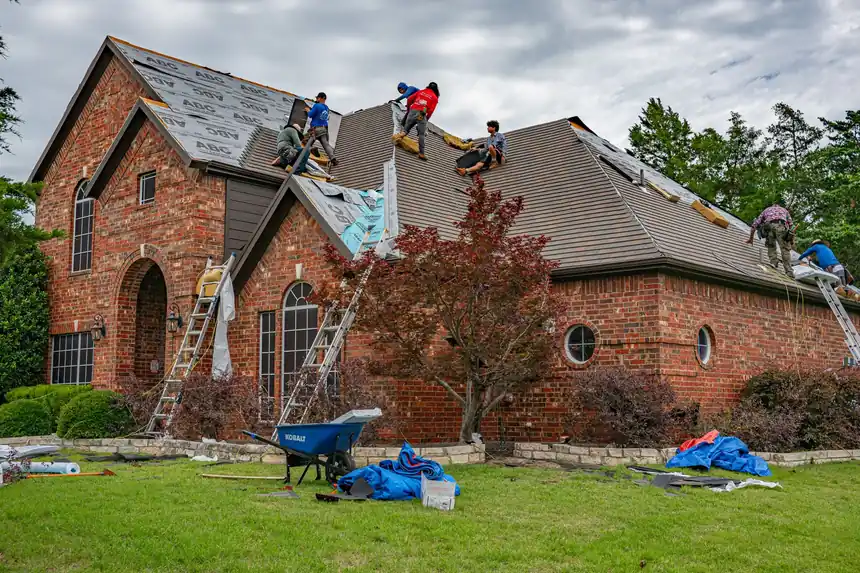

Focused arrival windows
Useful updates and clear arrival timing.

Roof Insulation Services Panama City FL are essential for improving energy efficiency and comfort in your home. Our affordable roof insulation options in Panama City help protect your property from extreme temperatures and reduce energy costs.
Useful updates and clear arrival timing.
Review the approach and price before deciding.
Equipped vehicles and respectful cleanup.
Neighbors serving neighbors with follow-through.
Our roof insulation services cover everything from initial assessment to installation and final inspection. We ensure that your insulation meets local codes and standards.
We provide a free consultation to assess your insulation needs and recommend the best options.
We help you choose the right insulation materials based on your budget and energy efficiency goals.
Our experienced technicians ensure proper installation using industry-standard practices and tools.
We conduct a thorough inspection post-installation to ensure everything is up to code and functioning correctly.
Share what is happening and receive a clear next step from the local team.
Roof Insulation Services Panama City FL involve the installation and maintenance of insulation materials to regulate indoor temperatures. This service is vital for homeowners looking to enhance energy efficiency and comfort, particularly in the fluctuating climate of Florida.
Local Panama City customers often require roof insulation due to the region's humid subtropical climate. With high temperatures and humidity levels, effective insulation helps prevent heat transfer and moisture issues, making our Panama City roof insulation services essential for maintaining a comfortable home.

We begin with a thorough consultation to assess your insulation needs. Our team evaluates your current insulation and discusses the best options available for your home.
Based on your needs and budget, we help you select the most suitable insulation materials, such as fiberglass or spray foam, ensuring compliance with Florida Building Code.
Before installation, we prepare the work area by removing any old insulation and ensuring the roof structure is sound. This step is crucial for effective insulation.
Our skilled technicians install the insulation using industry-standard tools like roofing nailers and trowels. The installation process typically takes a few hours, depending on the size of your roof.
After installation, we conduct a final inspection to ensure everything meets our high standards. We provide you with maintenance tips to keep your insulation effective.

Used for securing insulation boards and ensuring a tight fit during installation.
Essential for applying spray foam insulation evenly across surfaces.
Ensures worker safety during high installations, adhering to safety standards.
This method involves placing pre-cut batts of fiberglass insulation between rafters, providing excellent thermal resistance.
We use high-quality spray foam to create an airtight seal, significantly enhancing energy efficiency.
This technique involves blowing loose-fill insulation into attics, ensuring complete coverage and minimizing gaps.

Our team can assess and insulate your roof to eliminate drafts, enhancing comfort. You will experience a more consistent indoor temperature and lower heating costs.
We evaluate your insulation and recommend solutions to improve energy efficiency. You will benefit from reduced energy costs and improved home comfort.
Integrating roof insulation during renovations enhances energy efficiency and adds value. Your home will be more comfortable and appealing to potential buyers.
In Panama City, the subtropical climate necessitates effective roof insulation to combat heat and humidity. Our services are tailored to local building codes and the common roofing materials found in the area, such as asphalt shingles and metal roofing. We address specific challenges like moisture control and energy efficiency, ensuring your home stays comfortable year-round.
Homes in this area often require insulation upgrades to meet modern energy efficiency standards.
Coastal homes face unique insulation challenges due to salt air and humidity.
Older homes in Lynn Haven may benefit significantly from updated insulation.
Can lead to mold growth and insulation degradation if not properly managed.
Require effective insulation to maintain indoor comfort and reduce energy costs.
Before insulation, the home had high energy bills and uncomfortable temperatures, with drafts noticeable in winter.
Post-insulation, energy costs decreased by 30%, and the home maintained a consistent temperature year-round.
Maintenance: Regular checks on insulation integrity will help maintain these energy savings.
Significant moisture buildup caused mold growth in the attic, leading to health concerns.
After insulation installation, moisture levels dropped, and mold was eliminated, creating a healthier living environment.
Maintenance: Routine inspections will ensure continued moisture control.
The home was drafty and uncomfortable during winter, leading to increased heating costs.
With new insulation, the home is now draft-free and comfortable, with heating costs reduced by 25%.
Maintenance: Keeping vents clear and monitoring insulation can maintain comfort levels.
Roof insulation services address several common issues faced by homeowners in Panama City.
Ignoring this can lead to uncomfortable living conditions and increased energy bills. Our insulation services reduce heat transfer, keeping your home cooler and more comfortable during the hot summer months.
Moisture can lead to mold growth and structural damage if not addressed. We install moisture-resistant insulation that prevents dampness, ensuring a healthy indoor environment.
Inefficient insulation leads to higher heating and cooling costs year-round. Our roof insulation services in Panama City help lower energy bills by improving your home's energy efficiency.
$1,500 - $3,500 depending on scope
The cost of roof insulation services in Panama City varies based on factors such as material choice and roof size. Typically, prices range from $1,500 to $3,500 in 2026. Understanding these factors can help you budget effectively for your insulation needs.
Investing in quality insulation enhances energy efficiency and comfort, making it a cost-effective choice.
Different materials have varying costs; for example, spray foam is typically more expensive than fiberglass.
Larger roofs require more insulation, increasing overall costs.
Difficult-to-reach areas may require additional labor, affecting pricing.

With over 15 years of experience, our team is well-versed in providing top-quality roof insulation services. We are NRCA Certified and GAF Master Elite contractors.
Roof insulation in Panama City provides benefits like reduced energy costs, improved comfort, and moisture control, making it essential for homeowners.
Typically, roof insulation lasts between 20 to 30 years, depending on the material and environmental conditions in Panama City.
We recommend fiberglass batts, spray foam, and rigid foam board insulation, as they offer excellent thermal resistance for local conditions.
The cost of roof insulation in Panama City ranges from $1,500 to $3,500, depending on the size of your roof and the materials used.
Not seeing your question? Our local team can help you understand urgency, scheduling and what to expect.
Ask the local team
Our roof installation services ensure that your new roof is properly insulated, enhancing energy efficiency and longevity.
View service
If your roof is beyond repair, our roof replacement services include insulation options that improve energy performance.
View service
We offer roof repair services that include checking and replacing insulation to prevent moisture damage.
View service
Regular roof inspections can identify insulation issues early, helping you maintain your roof's efficiency.
View serviceWe invite you to reach out for any roofing needs. Our team is available to assist you promptly, ensuring a quick response.